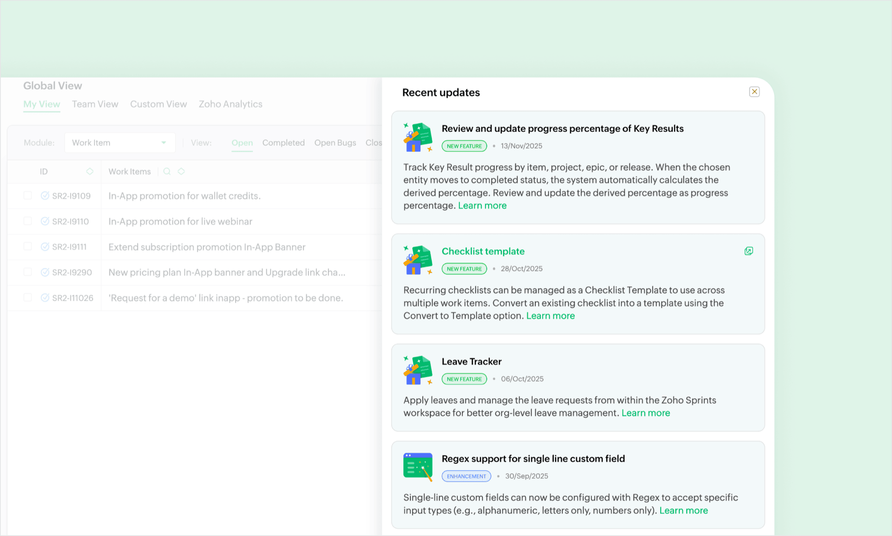
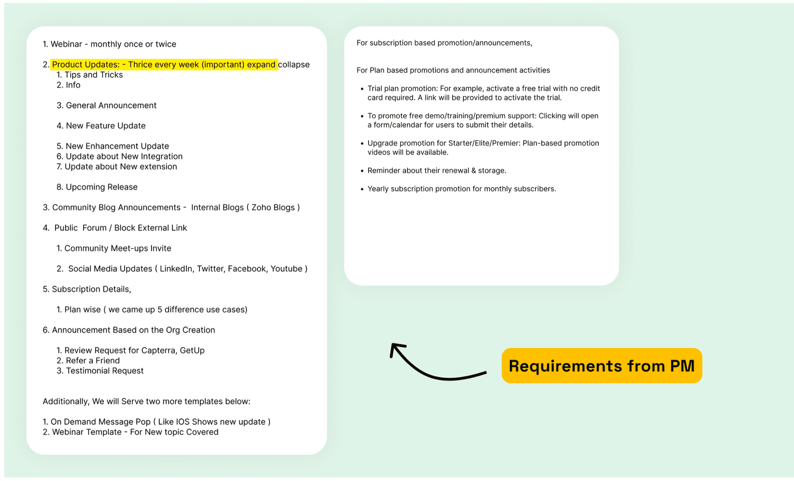
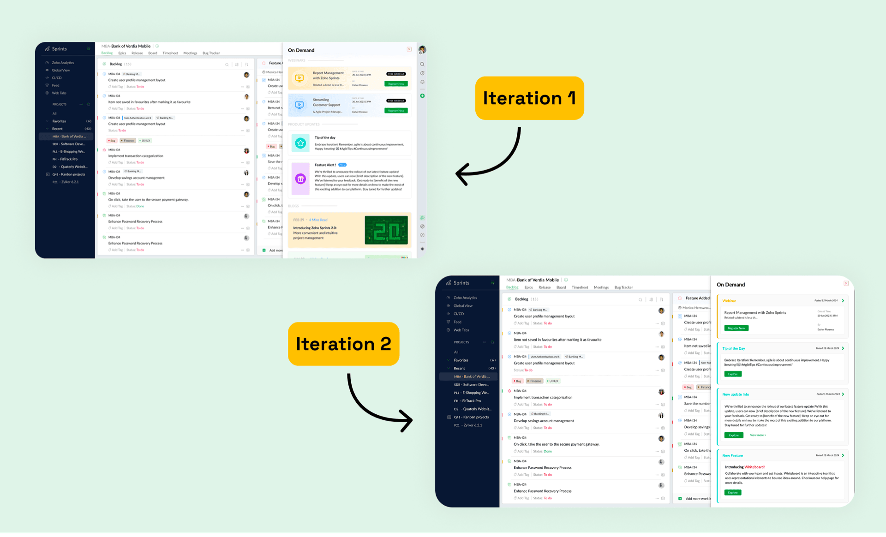
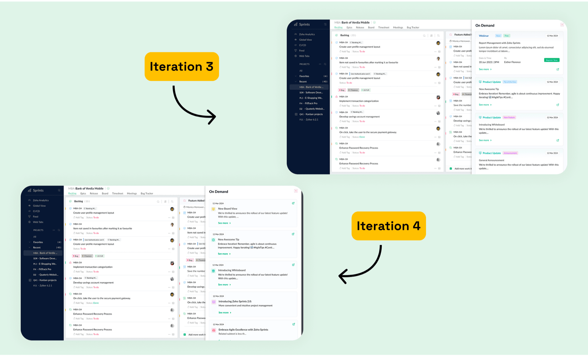
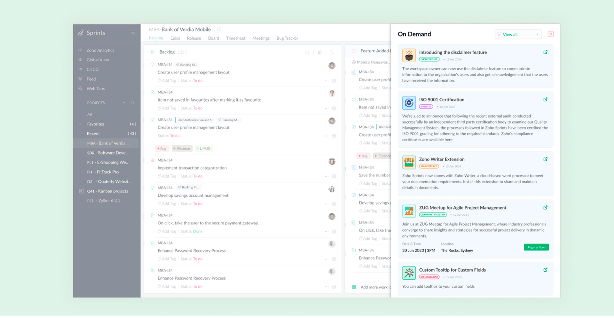
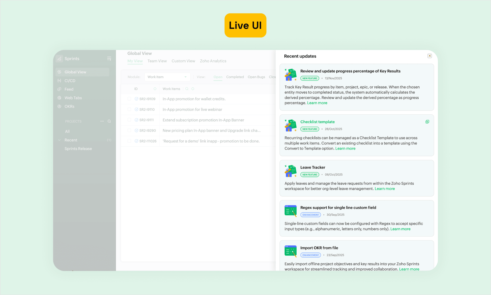

Recent Updates — Zoho Sprints
Designing a centralized in-product updates system for Zoho Sprints
Key Takeaways
- One feed for announcements, subscription reminders, community updates, and promotions
- Pushed back on a flat list — got approval to visually separate action-required items from passive ones
- Shipped intact, only change was icon redrawing during eng review

The Problem
Sprints had no way to reach users inside the product. Updates went out via email — most people never saw them. Subscription reminders, community posts, promotions — nothing reached users in-app.
I worked with the PM to map out what needed to go in the feed and what didn't. The engineering team flagged what was feasible within the existing notification infrastructure, which shaped the structure early on.
What Made It Tricky

The hard part wasn't building a notification panel. It was fitting very different types of content into one space — announcements, subscription reminders, community updates, and promotions. Each has a different urgency and frequency.
Show too much, users ignore everything. Show too little, they miss what matters.
Early Exploration
Before jumping into Figma, I listed out the content types on paper to understand urgency, frequency, and what actions each type needed. Wanted to get the structure right before touching pixels.
How the Design Evolved


Early versions — Structured cards with heavy visual hierarchy. Looked polished but too heavy for something users see multiple times a day.
Where I pushed back — The brief said all updates go in one flat list. I argued that subscription reminders (which need action) should look different from passive updates. A user missing a renewal notice is a business problem. I showed both approaches in mockups, and the PM agreed.
Where I was wrong — I spent two iterations on a custom card system that broke Sprints' design language. My manager pulled me back, and he was right. It should feel like it always existed in the product.
What landed — Notification-style items. Simple to scan, action-driven updates get CTAs, passive ones don't.
Final Design

A single update feed inside the product. One place for everything.
- One stream, no tabs. Everything sorted by time. We debated tabs-by-type early on, but the PM and I agreed it would fragment attention — users should see everything in one scan.
- Visual distinction by update type — colour-coded indicators let users tell at a glance what needs attention vs. what's informational.
- Scannable by default, expandable for detail. Most updates show title + one-liner. Tap to expand for full context.
- Action-driven updates (subscription reminders) visually separated from passive ones — because the engineering team needed a clear hook for CTA buttons.
After Shipping

Design shipped intact. Only change was redrawing icons to match Sprints' existing style — caught during eng review. The marketing and product teams now actively use the feed to reach users.
What I Took Away
Pick the right battles. Separating action-required from passive updates was worth fighting for. Not every design disagreement is — but this one affected the business.
Follow the system. My custom card designs looked good alone but felt foreign in the product. Consistency matters more than novelty in utility screens.
Move fast, don't get attached. Several iterations, two weeks. Most of them were wrong. That's fine — that's how you find the right one.